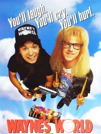
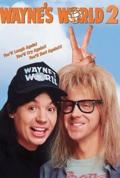
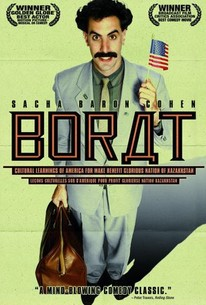

Alexis DEWERDT
Web developper
After 2 years as a Production Manager, I started a New chalenge by following Le Wagon 9 weeks bootcamp to become Web developper
My favorite Movies :
|  |
Waynes World (1992)Originally a skit on "Saturday Night Live" during the late '80s and early '90s, "Wayne's World" is about two teenage dudes who host a public access TV show, which is mainly about rock, babes and people who live in the area. One day Wayne and Garth go to a rock concert, and Wayne falls in love with a bass guitarist named Cassandra Wong. Wayne spends the rest of the movie trying to get Casandra to fall in love with him. He also struggles with a network executive who wants to buy the rights to his show. |
|  |
Waynes World 2 (1993)This sequel to the hit comedy focuses on the attempts of Wayne and Garth to organize Waynestock, a gigantic rock festival. Trouble comes, however, when a sleazy music executive begins to woo Wayne's girlfriend with promises of fame and fortune, and Wayne must attempt to win her back. |
|  |
Borat (2006)Journalist Borat Sagdiyev leaves his native Kazakhstan to travel to America to make a documentary. As he zigzags across the nation, Borat meets real people in real situations with hysterical consequences. His backward behavior generates strong reactions around him, exposing prejudices and hypocrisies in American culture. In some cases, Borat's interview subjects embrace his outrageous views on race and sex by agreeing with him, while others attempt to offer a patriotic lesson in Western values. |
About this page
This page has been coded during the FullStack program @LeWagon. That was probably the best experience of my entire life.